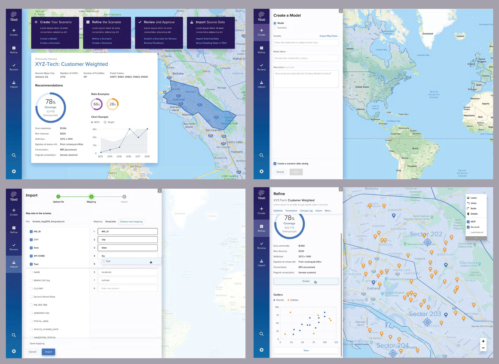
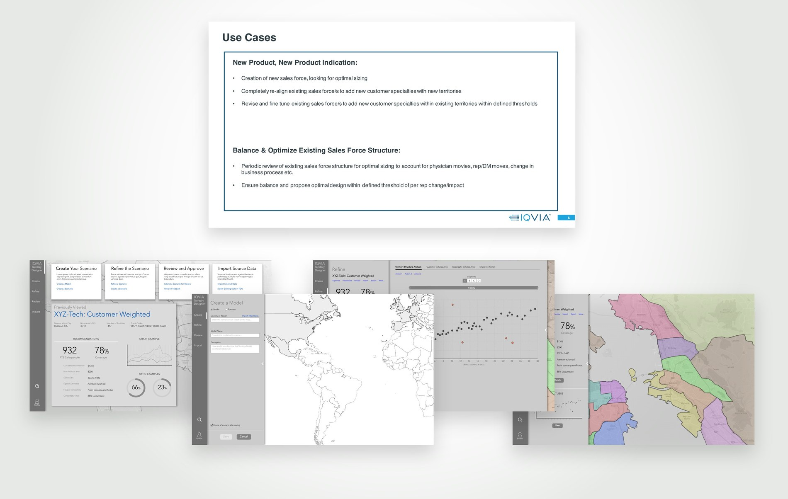
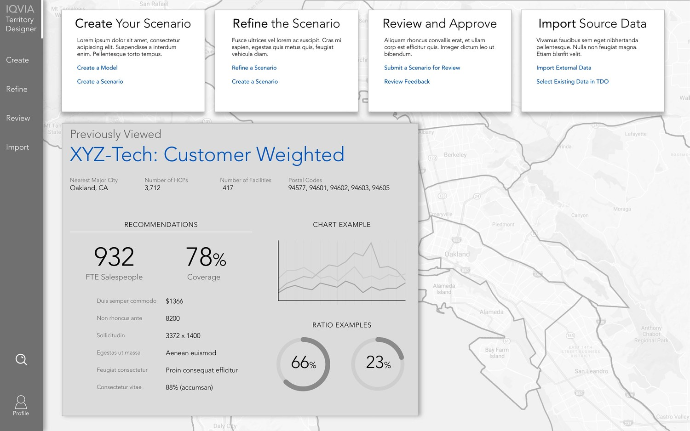
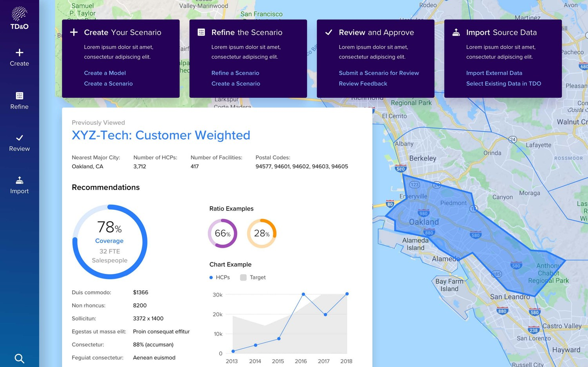
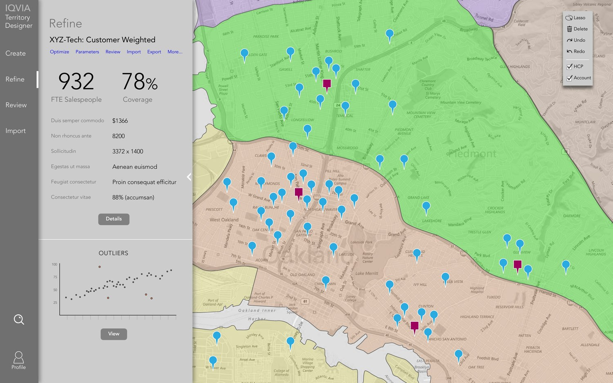
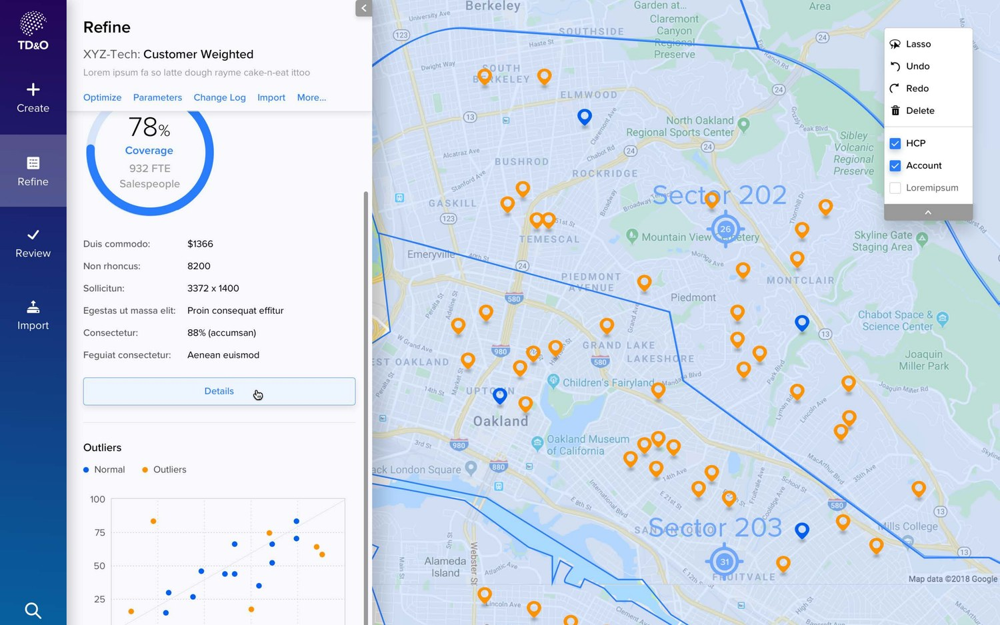
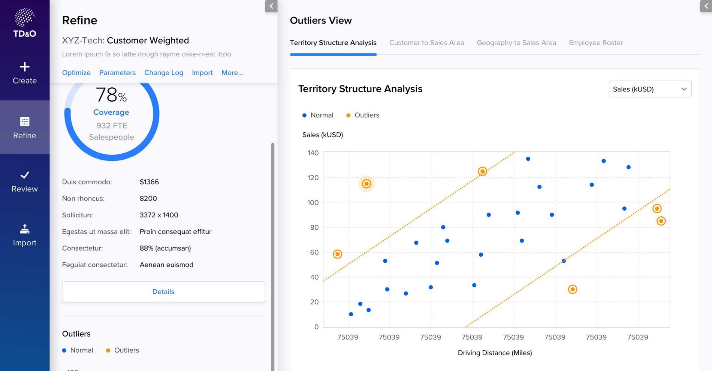
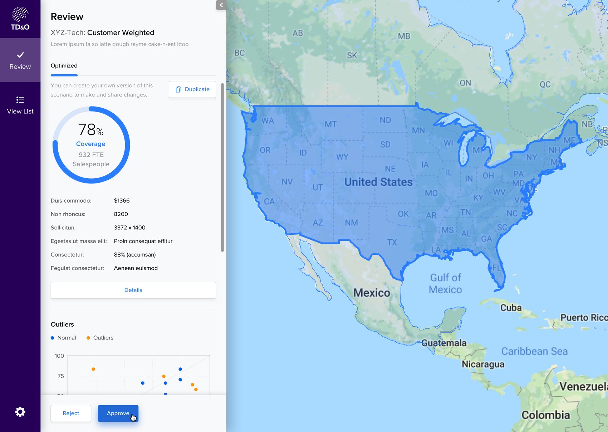
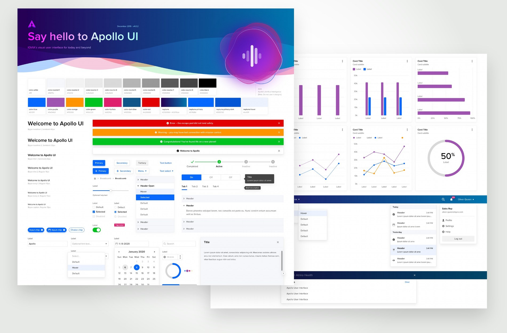
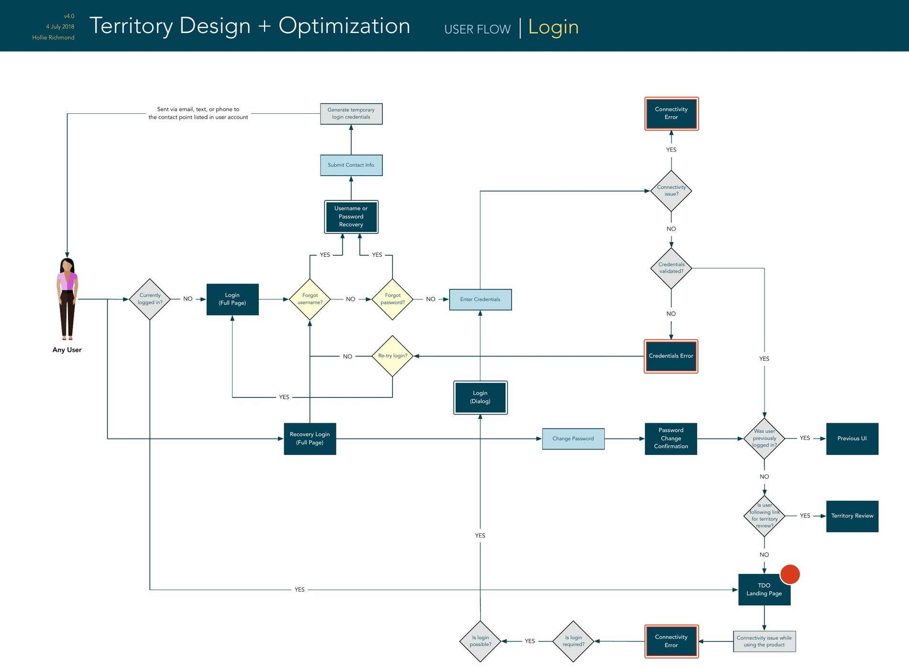

Case study / IQVIA
Territory Designer
Every pharmaceutical sales rep gets a patch of the map to cover. Splitting a country into those patches fairly is harder than it sounds, because an even split by workload is almost never an even split by earning potential, and neither one gives you sensible drive times. I designed the tool that lets a strategist try different versions, see what each one costs, and show their work before anyone signs off.
- Role
- Product design, wireframes through UI
- Client
- IQVIA
- Platform
- Enterprise web
- Scope
- Model, scenario, refine, review, import, export
- System
- Apollo UI
- Reach
- Global, on local geography

Territory Designer, from scenario dashboard through model creation, import and refinement.
The problem
The job is to balance three things at once: how much work each rep is carrying, how much they can realistically sell, and whether the patch is small enough to actually drive. Tighten somebody's drive and you have usually just handed their best accounts to the rep next door. And because a territory is where a rep's income comes from, a bad redraw doesn't only cost you coverage, it costs you people.
It also had to work anywhere. Every market carves itself up differently, so the tool took shape files from global and local vendors and had to cope with US ZIP codes, European bricks and whatever else a country used, without turning into a different product in each one.
Two situations came up again and again. A company launches a product or gets a new indication approved, and needs a sales force sized from scratch or an existing one realigned to cover new specialties. Or a structure already out in the field drifts, because physicians move and reps move and the business changes, and somebody has to rebalance it without shifting any one rep's patch further than the agreed limit.

The decisions
Wireframe first, so the arguments happen while they're cheap
Product management handed me requirements and use cases, not screens. I wireframed from there, which is the cheapest place to have an argument. A grey box and a label cost nothing to move, and working without color or type keeps everyone talking about what a screen is for instead of what the button should look like.
The navigation came out of that stage: Create, Refine, Review, Import. Those four words are the life of a territory plan rather than a list of features, and once they became the spine of the app, every new screen had an obvious place to live. It also left the dashboard with one job, which is getting you back to whatever scenario you were in the middle of.


Treat the map as the document, not as a panel
Refining is where the actual work happens, so the map gets the whole screen and everything else floats on top of it in panels you can collapse. The outlines, the pins, the sector labels: that's the thing being edited, and it shouldn't have to share the screen with a form.
Coverage and headcount sit at the top of the left panel, because those are the two numbers that move every time you change something and they're the first thing anyone checks. The tool palette is short on purpose: lasso, undo, redo, delete, and toggles for the provider and account layers. Everything else lives behind Optimize, Parameters and Change Log, well out of the way of the map.


Show the outliers, not the average
A plan can average out beautifully and still contain the two territories everybody is going to argue about. So the analysis view plots each one as a dot, sales against driving distance, draws the acceptable band across it, and circles anything that falls outside. Tabs hold the other versions of the same question: customers to sales area, geography to sales area, the employee roster.
A regional manager is never going to ask you about the average. They're going to ask about the one territory that looks wrong, so that's what the screen leads with, and every dot opens into enough detail to defend it or fix it.

Make importing somebody else's data a designed step
Every client turns up with their own spreadsheet, their own column names, and none of it matches the schema. In most enterprise software that's a support ticket. Here it's a screen: their file on the left, our schema on the right, drag to match them up, then save the mapping so the next upload from that client is one click.
Nobody puts that screen in a pitch deck. It's also the difference between software a consultant can hand over and software they end up running for the client forever.
Put the sign-off inside the tool
A plan goes nowhere until a regional lead approves it, and on most projects that approval happened over email with a deck attached. So Review is one of the four things the app does. The lead opens the scenario itself, sees the same coverage number and the same outliers the strategist was looking at, and approves or rejects it there.
They can also duplicate it. When a lead disagrees with a version, what actually moves things along is their own version rather than a paragraph describing what they would change, so that button sits right next to the numbers.

Designed inside Apollo
IQVIA had a design system called Apollo, and Territory Designer is built out of it: type scale, color, cards, form rows, inputs, charts. The interesting part of working inside a system on a product this specific is what you do when the system doesn't have what you need, and no UI kit comes with a map canvas and a lasso tool.
My rule was simple. If Apollo had it, I used it as it came. If Apollo didn't, I built the thing the way Apollo would have built it. That's what keeps the map tools from feeling like a plugin somebody dropped into another company's product.

Where it got to
The work ran from requirements, through my wireframes, to a clickable prototype. The exported build comes to 496 screens: login, dashboard, model and scenario creation, refine and optimize, browsing, review and feedback, import and export. Not a walkthrough of the happy path, but every state an engineer would need to build against.
Login is the smallest example of what that meant in practice. Ten screens' worth of branching for one feature nobody thinks about until it fails: recovery, a temporary credential sent to whatever contact point the account has on file, a connectivity error, a credentials error, and three different places you can end up once you're through, depending on whether you were already in the middle of something.
What I took from it: somebody has to stand up and defend this plan to the people it affects. The tool is only doing its job if it hands them what they need for that conversation.
